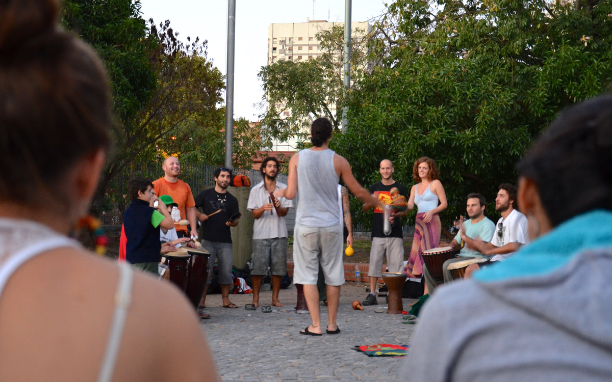

Neighborhoods
Plaza Armenia is a particularly pleasant place to be on weekends, as it has all the charm of local drum teams and merchants without the noise of tourists and trinket peddlers. Grab a bottle of wine, lay in the grass, and watch the world go by.

Palermo - The biggest neighborhood in the city, Palermo is a home base to local yuppies and foreign expats. It's worth a visit for its solid shopping and restaurants. Stay on the edges of the neighborhood in areas like Palermo Soho, Palermo Hollywood, or Palermo Chico to get a more local sense of the place.

Villa Crespo - lies south of Cordoba opposite Palermo, and is its larger neighbor's more mellow counterpart. Locals head here for its outlet shops and quaint cafes without the touristy prices and noise of more mainstream areas.

Almagro - Amalgro is a true locals neighborhood and a fairly accurate representation of everyday life in middle class BA. It's also home to Bomba del Tiempo, an improv drum show that takes place every Monday night and draws hoards of travelers and young locals, alike.
Recoleta: Home to the famed cemetario of the same name (see below), Recoleta is home to monied (likely older) tourists, old-money aristocrats, and international embassies. See it for a glimpse at what BA was in its 'Paris of the South' golden years, but don't stay for the overhyped and overpriced shops. You'll get better bargains and a more authentic sense of the city elsewhere.